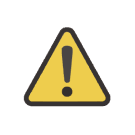
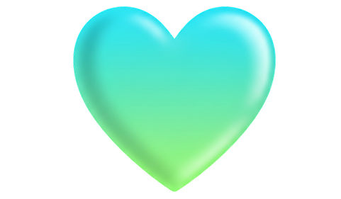

→ Кастомные блоки для тильды → Как добавить любой слайдер на Тильду
← Вернуться на главнуюПолное руководство: как добавить любой слайдер на Тильду с помощью браузерного расширения
Уникальный слайдер через браузерное расширение
Что вы получите после установки расширения?
- - Готовые слайдеры без Zero Block
- - Автоматическая вставка кода
- - Поддержка обновлений
Как добавить любой кастомный слайдер на Тильду за пару кликов.
Три шага. Три минуты. Ваш слайдер готов
Шаг 1: Регистрация, подписка и установка инструмента
Это займёт 3 минуты и откроет доступ ко всему функционалу.
1. Создайте аккаунт на нашем сайте и активируйте пробный период или купите подписку. Ваша
поддержка напрямую помогает нам разрабатывать новые, современные шаблоны слайдеров и делать
продукт лучше.
2. Установите наше расширение из официального магазина вашего браузера (совместимо с Chrome,
Edge, Яндекс.Браузер и другими). После установки войдите в него под только что созданным
аккаунтом.
Подпишитесь на наши соц-сети, чтобы быть в курсе новостей первыми.
Первыми получайте анонсы новых готовых решений, уникальные сниппеты кода и лайфхаки по обходу ограничений Tilda.
Шаг 2: Создайте zero-block на тильде и разместите ваши фото
Создайте Zero‑Block и разместите в нём фотографии для слайдера в любом порядке — для красивого вида советуем выровнять их в ряд. Сохраните блок, активируйте наше расширение и наведите курсор на добавленные изображения, чтобы сохранить их URL.
Рекомендация:
Загружайте фотографии одного размера и в формате JPG/WEBP — это поможет сайту работать быстрее.

Выберите слайдер который хотите добавить на ваш сайт:
Настройки стрелок (если есть своя)
Стандартная стрелка (если нет своей)
Настройки анимации слайдов
Пример слайдера как он выглядит
Поддержать проект
Если статья помогла — вы можете поблагодарить
любой
суммой. Это мотивирует писать больше таких гайдов!
